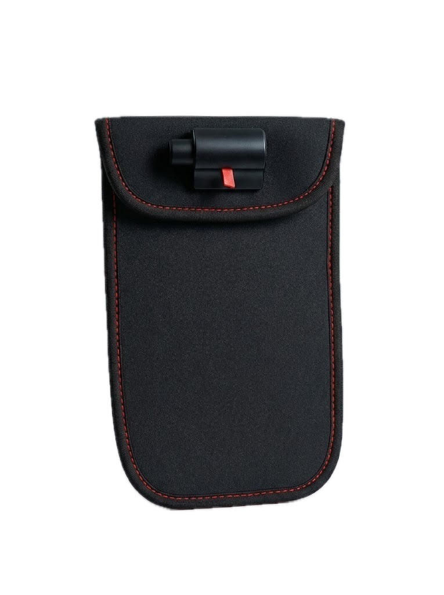
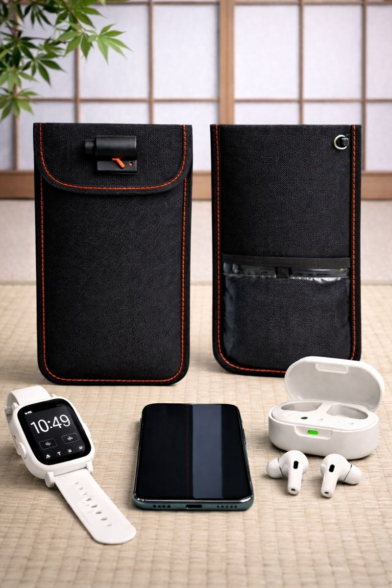
The Munio Pouch is a lockable fabric pouch designed specifically for school use. Each student places their phone inside the pouch, which is then secured using a dedicated locking mechanism. Students keep the pouch with them throughout the day, but cannot access their phone until it is unlocked by a designated unlocking device.
木寧收納袋是為學校而設的鎖扣手機袋。學生把手機放入袋內並鎖上， 上課期間無法打開；放學或指定時段由授權職員解鎖，讓手機「在身邊，不在手上」， 建立更專注、更寧靜的學習環境。
We understand that every school operates with different routines and schedules. The Munio Pouch integrates smoothly into morning registration, assemblies, lesson transitions, or tutor periods — without requiring building works, installation, or additional storage space.
我們明白每間學校的日常流程與作息不同。木寧收納袋可自然融入 早會點名、集會、課堂轉堂或班主任課等安排，無需裝修、安裝或額外儲物空間。
Munio Pouch is designed to help schools create a mobile-free learning
environment without removing students’ personal belongings.
Phones are kept securely with students but remain inaccessible
during school hours, encouraging responsibility and healthy
digital boundaries.
Without mobile distractions, classrooms become calmer and more focused.
Students engage more actively, participate fully, and experience
reduced anxiety linked to excessive screen use and social media.
Limiting phone access also strengthens social interaction,
allowing students to communicate face-to-face and develop
stronger interpersonal skills. At the same time, it enhances
safeguarding by reducing exposure to inappropriate content
and online risks.
木寧收納袋是一項兼顧實用性與尊重學生需要的手機管理方案，
讓學生可把手機安全隨身攜帶，同時確保課堂期間無法使用，
有助培養自律及健康的數碼使用習慣。
在無手機干擾的情況下，課堂更專注、秩序更穩定，
學生能更投入學習，亦可減少社交媒體帶來的情緒壓力。
同時，限制手機使用可促進面對面交流，強化溝通與社交技巧，
並降低網絡欺凌、不當內容及私隱風險，提升校園安全。
Fewer distractions and a calmer learning environment.
課堂干擾減少，學習氣氛更穩定寧靜。
Reduced stress from constant connectivity and social media.
減少長時間連線與社交媒體帶來的情緒壓力。
More face-to-face interaction between students.
學生更願意進行面對面交流，建立健康同儕關係。
Lower risk of cyberbullying, misuse, and privacy concerns.
降低網絡欺凌、不當拍攝及私隱外洩風險。
Munio Pouch introduces a simple daily routine for students:
Phones go in, the pouch locks, and learning begins.
A respectful way to keep students’ phones safely with them while ensuring
they remain inaccessible during lessons, balancing focus and respect.
木寧收納袋為學生建立一個簡單而清晰的日常流程：
手機放入袋內、鎖上、安心學習。
學生仍可將手機安全隨身攜帶，但於上課期間無法使用，
在尊重私人物品的同時有效減少干擾。
1) On arrival, students place their phone into their allocated pouch.
1) 學生到校後，把手機放入自己的專屬手機袋。
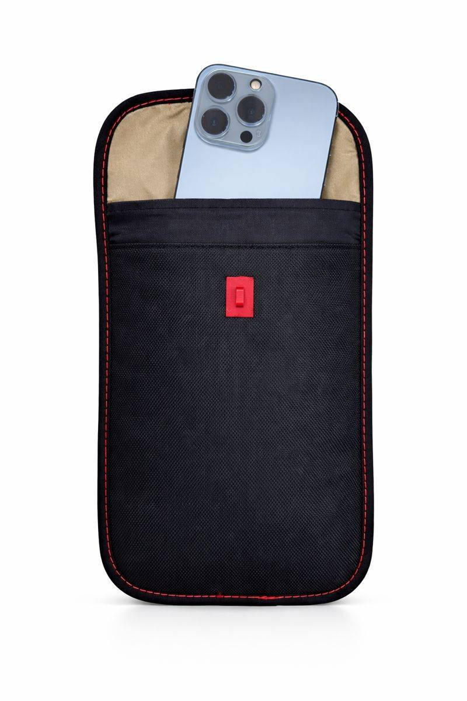
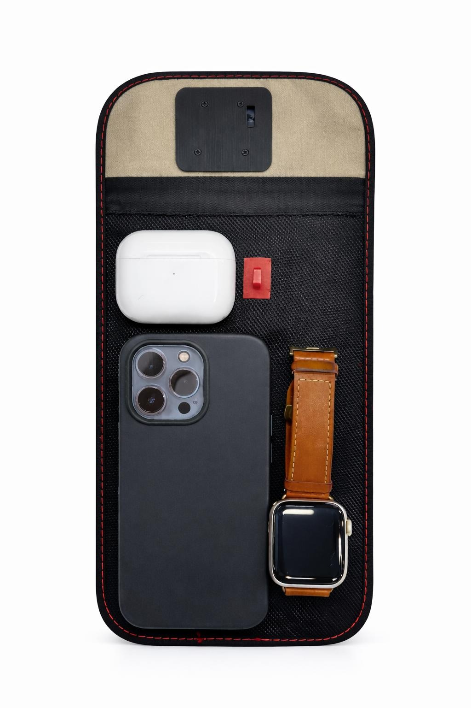
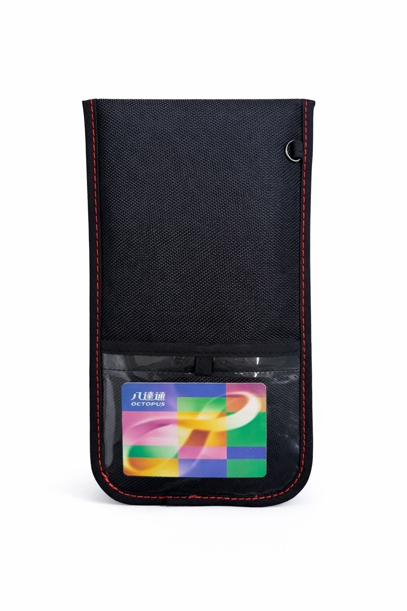
2) Students close and secure the pouch, keeping it with them for the entire school day.
2) 學生把手機袋關好並鎖上，整個上課日保持隨身攜帶。
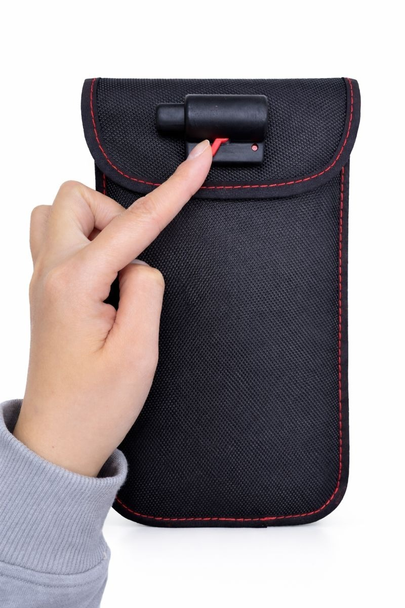
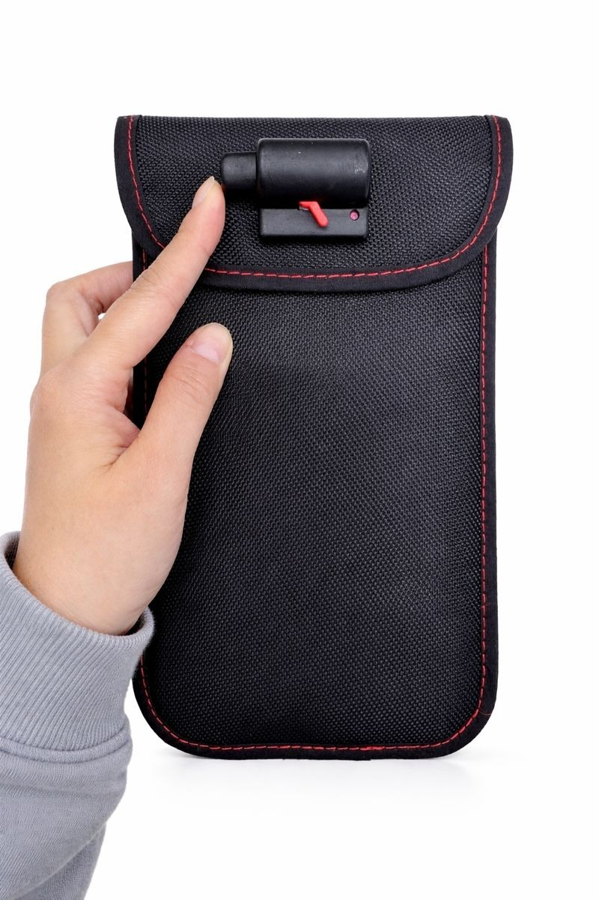
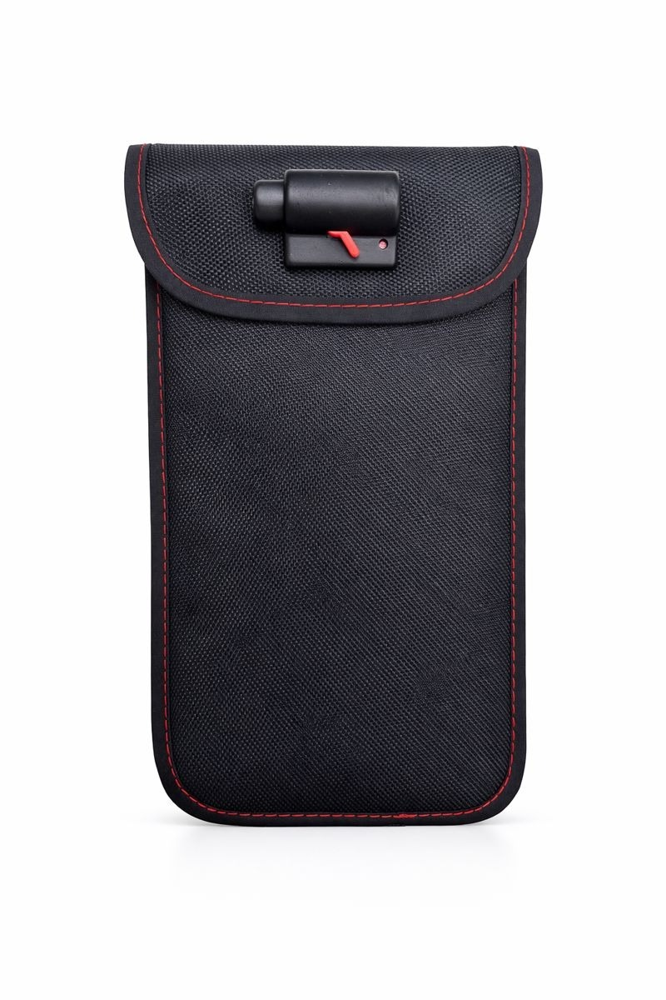
3) At dismissal, students tap the pouch on the unlocking base to retrieve their phone.
3) 放學時，學生把手機袋在解鎖底座上輕觸一下，即可取回手機離校。
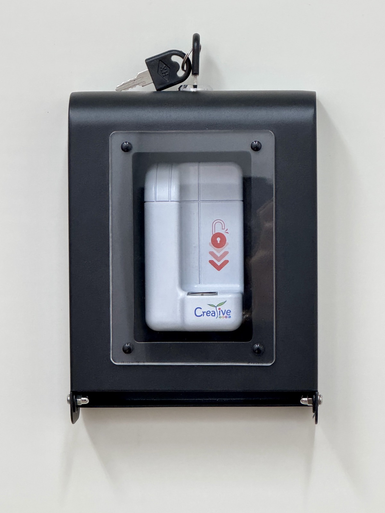
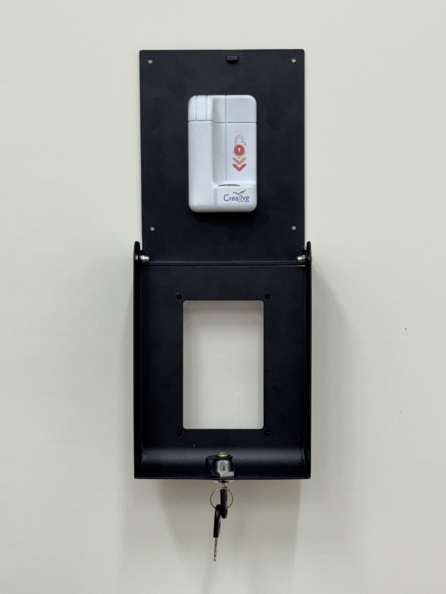
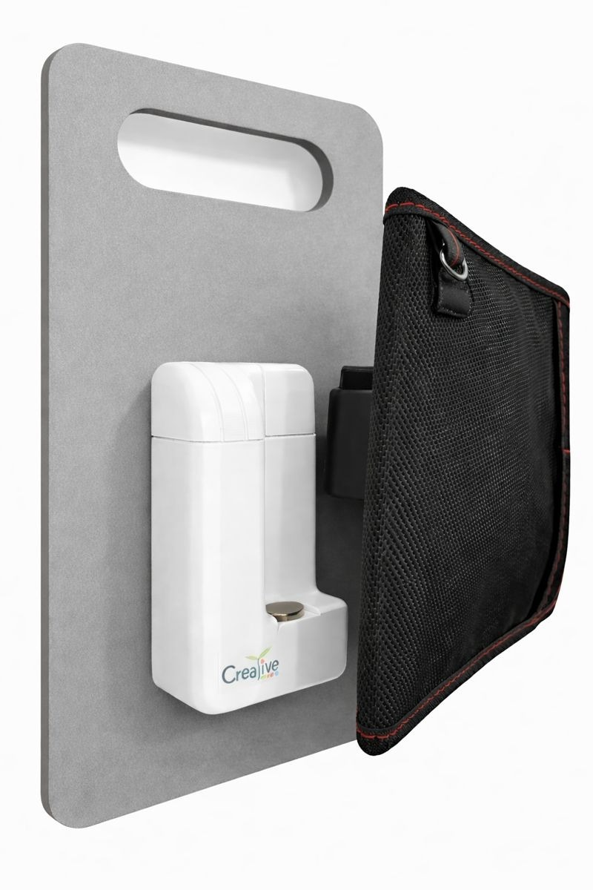
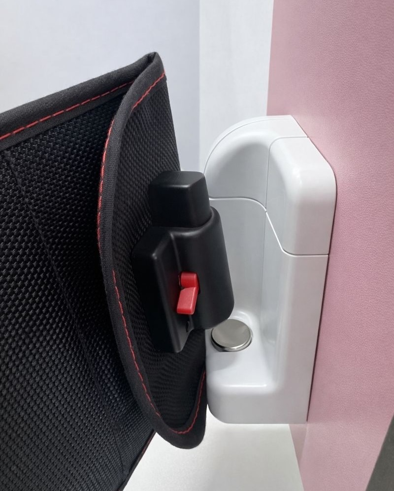
The Mobile-Free School Policy aims to create a more focused and less distracting learning environment, responding to growing concerns within the global education community about the impact of mobile phone use on students.
無手機校園政策旨在營造更專注、少干擾的學習環境， 回應全球教育界對學生使用手機對學習與身心發展所帶來影響的關注。
For these reasons, the Munio Pouch System is recommended. It allows students to keep their devices while preventing distraction during school hours.
基於以上原因，建議採用 木寧收納系統， 讓學生保留攜帶個人裝置的權利，同時有效避免課堂期間的干擾。
No.
All devices must be placed inside the Munio Pouch to prevent use during lessons.
不可以。
所有手機及可連接裝置必須存放於木寧收納袋，以防止課堂期間使用。
Yes.
Lock it immediately on arrival. Access only at dismissal.
可以。
但到校後必須即時鎖入木寧收納袋，並於放學時才可取回。
Yes.
Tracking works once the device is retrieved after school.
可以。
追蹤功能須於放學後取回裝置後方可使用。
Yes.
The policy applies to all phones and connectable devices.
適用。
本政策涵蓋所有類型的手機及可連接裝置。
Yes.
Only permitted in designated areas with teacher approval for learning purposes.
是。
高中學生只可在老師批准及指定範圍內作學習用途，否則會作紀律處理。
Teachers may use portable unlocking devices where necessary for learning activities.
學校可提供便攜式解鎖裝置，由老師按教學需要為學生解鎖。
Replaced at parent’s expense; otherwise devices must be left at home.
補領費用由家長承擔；如不補領，相關裝置需留在家中。
The Munio Pouch is a lockable storage pouch that allows students to keep their
phones with them while preventing access during lesson time.
This design reduces separation anxiety and avoids issues related to device storage or security.
木寧收納袋是可上鎖的手機保管袋，學生可隨身攜帶已鎖上的手機，但於上課時間無法取用，減少干擾。
這種設計可減少分離焦慮，同時避免集中存放帶來的保管及安全問題。
The pouch contains both a mechanical lock and a magnetic safety mechanism.
Once the magnetic lock is engaged, it can only be opened using the school’s authorised unlocking devices.
The school will be equipped with both wall-mounted and handheld unlockers
for convenience.
手機袋具備機械鎖及磁力安全機制；一旦上鎖，只能使用學校授權的解鎖裝置打開。
學校可配備固定式與手提式解鎖器，方便日常運作。
No.
Locking and unlocking procedures are very quick, and the school will provide
sufficient unlocking stations to minimise waiting time.
不會。
上鎖及解鎖流程非常快速，學校亦可設置足夠的解鎖站，以減少等候時間。
Parents may submit a request to the General Office. The school will assess the situation and make appropriate arrangements based on individual needs.
家長可向校務處提出申請，學校會按個別需要作評估及安排。
The device will be kept by staff during morning assembly.
裝置會在早會時由教職員暫存保管。
The student must complete a detention session after school to retrieve the device.
學生需在放學後完成留校／處理程序後才可取回裝置。
Recommended measures include:
建議處理方式：
Teachers will remind students during the initial implementation phase.
推行初期，老師會提醒學生遵從安排。
The school may conduct random checks later, including schoolbag inspections.
其後學校可按需要進行抽查（例如書包檢查）。
Parents may contact the General Office, where staff will relay messages to students.
家長可聯絡校務處，由職員代為轉達訊息。
Students who need to contact parents may seek assistance from the General Office during break or lunchtime.
學生如需聯絡家長，可於小息／午膳時間到校務處尋求協助。
Emergency procedures will operate as usual, with staff prioritising student safety.
緊急應變程序一切照常，教職員會以學生安全為首要。
Restricting phones reduces the risk of parents receiving unverified information that may cause unnecessary panic.
限制手機可減少家長收到未經核實訊息而引起不必要恐慌的風險。
The teacher-in-charge will decide, based on risk assessment, whether Munio Pouches are required for the activity.
負責老師會按風險評估決定該活動是否需要使用 Munio Pouch。
| Category 類別 | Mobile Pouch 手機袋（Mobile Pouch） | Mobile Locker 手機鎖櫃（Mobile Locker） |
|---|---|---|
| 🔒 Privacy🔒 私隱 | Students keep phones sealed; no staff handling手機一直由學生自行密封隨身攜帶，教職員無需接觸裝置 | Lower: staff collect/store devices學校需集中收取、處理及存放手機 |
| 🙋 Responsibility🙋 責任感 | Student-managed; reduces conflict學生自行管理已密封的手機袋，減少衝突並建立信任 | Shifts responsibility to school責任轉移至學校，容易引起爭議與不滿 |
| 📄 Admin Workload📄 行政工作量 | No daily collection/return無需每日收集、標記、派發或歸還流程 | High: collect, label, store, return需收集、標記、存放及派發 |
| ⚠️ Loss / Damage Risk⚠️ 遺失／損壞風險 | Phone stays with student手機全日由學生保管，降低調亂或遺失風險 | Higher risk of mix-up/loss/damage較高：集中存放容易出現調亂、遺失或損壞 |
| ⛑️ Emergency Readiness⛑️ 緊急應變 | On student (inaccessible, but available if needed)雖不能使用，但手機在學生身上，便於學校按需要處理 | Not on student (requires retrieval)手機不在學生身上，處理及取回需額外程序 |
| 💰 Cost💰 費用 | Parent purchase; minimal school equipment由家長購買；學校一般無需額外設備費 | Locker purchase + installation + maintenance需購買鎖櫃、安裝及維護，成本較高 |
Survey for collecting parent feedback on mobile-free school arrangements.
用於收集家長對「無手機校園」安排的意見。
Around the world, governments and education authorities are taking action to reduce the negative impact of mobile phones on students’ learning, wellbeing, and social development. Phone-free or phone-restricted school policies are increasingly recognised as an effective and evidence-based approach.
全球多個國家及地區的政府與教育機構，正積極應對手機對學生學習、身心健康及社交發展帶來的影響。 無手機或限制手機使用的校園政策，已逐漸被視為一項具實證基礎且成效顯著的教育措施。
Reported outcomes include improved classroom behaviour, stronger academic focus, healthier social interaction, and reduced stress related to constant connectivity.
各地實施後的成效包括：課堂秩序改善、學習專注度提升、學生社交互動更健康，以及因長期連線而產生的壓力減少。
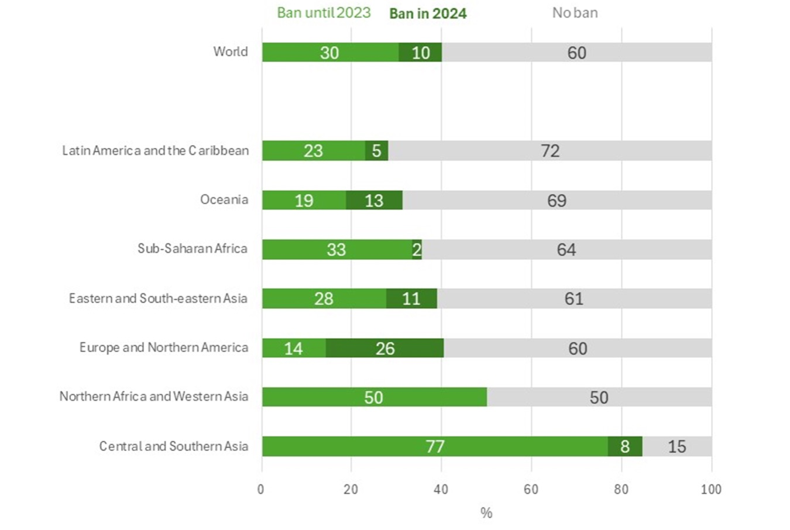
Percentage of education systems with laws and policies banning smartphone use in school, by SDG region, end of 2024.
截至 2024 年底，各 SDG 地區教育體系訂立禁止在校使用智能手機法律與政策的比例。
Source: GEM Report PEER profiles, education-profiles.org
資料來源：GEM Report PEER profiles， education-profiles.org
China’s Ministry of Education states that primary and secondary students should not bring mobile phones to school.
Any exception requires written parental consent; even with consent, phones must be handed to the school and may not be used during school hours.
The policy aims to reduce distraction, protect students’ eyesight and wellbeing, and improve focus in class.
Source: Ministry of Education of the People’s Republic of China (MOE)
中國教育部指出，中小學生原則上不應攜帶手機到校；如有需要，須取得家長書面同意。 即使獲批准，手機亦需交由學校保管，上課期間不得使用。相關政策旨在減少干擾、 保護學生視力與身心健康，並提升課堂專注度。
Research in the United Kingdom shows a strong association between effective mobile-phone bans and school performance.
Secondary schools with clear and well-enforced phone-free policies were more than twice as likely to be rated “Outstanding” by Ofsted.
Students in these schools also achieved GCSE results equivalent to one to two grades higher (Progress 8 scores between +0.13 and +0.25).
While the report does not claim direct causation, it identifies a clear correlation between strong phone-free policies and positive educational outcomes.
Source: Policy Exchange (2024), Disconnect
英國研究顯示，嚴謹而有效的無手機政策與學校表現之間存在明顯關聯。 推行清晰手機禁令的中學，被 Ofsted 評為「卓越（Outstanding）」的機會超過兩倍； 其學生的 GCSE 成績亦相當於提高一至兩個等級（Progress 8 約 +0.13 至 +0.25）。 報告雖未聲稱直接因果關係，但指出無手機政策與正面教育成果之間存在顯著相關。
Look Up Hong Kong highlights that delaying children’s access to smartphones and social media can protect both mental and physical wellbeing.
Children grow up with fewer digital distractions, stronger real-world relationships, and greater curiosity and creativity.
Public support is strong: 87% of parents would delay smartphones until at least age 14, 94% support setting social-media age limits at 16,
and 92% would choose a smartphone-free school for their children.
Source: Look Up Hong Kong
Look Up Hong Kong 指出，延後孩子接觸智能手機及社交媒體，有助保障其身心健康， 讓孩子在較少數碼干擾的環境中成長，建立更豐富的真實人際關係，以及更強的好奇心與創造力。 其調查亦顯示社會高度支持：87% 家長願意把智能手機延至至少 14 歲，94% 支持把社交媒體年齡限制設為 16 歲， 92% 會為子女選擇無手機學校。
Singapore has announced stricter controls on student smartphone use in secondary schools starting from 2026.
Under the new rules, mobile phones and smartwatches must remain locked away throughout the entire school day, including recess and certain school activities,
with limited exceptions granted where educationally necessary. The policy is intended to strengthen student wellbeing and improve focus and engagement in school life.
Source: Singapore Ministry of Education, 30 November 2025
新加坡宣布將於 2026 年起進一步收緊中學生使用手機及智能手錶的規定。 根據新安排，裝置需於整個上課日保持收起狀態，包括小息及部分校內活動； 學校可在具教育需要的情況下作有限度例外安排。該政策旨在提升學生身心健康，並加強學習專注與校園投入度。
Unit 18, 14/F Vanta Industrial Centre, No.21–33 Tai Lin Pai Road, Kwai Chung NT
香港新界葵興大連排道21-33號宏達工業中心14樓18室
(+852) 2780 9951 / 3175 0608 (Tel)
(+852) 2770 6060 (Fax)
(+852) 2780 9951 / 3175 0608（電話）
(+852) 2770 6060（傳真）
info@creativespot.com.hk